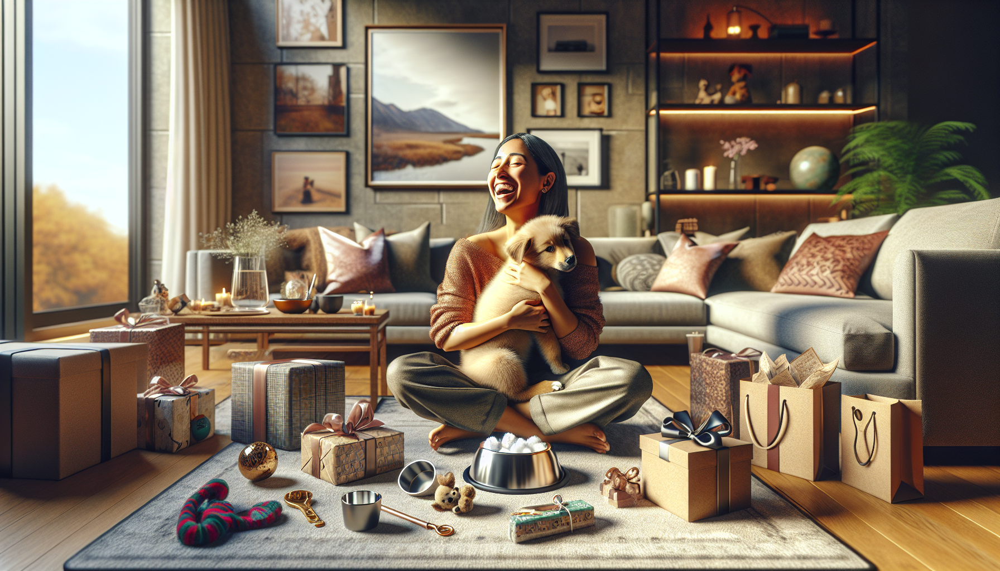

Bringing home a new puppy is one of life’s sweetest milestones. It is exciting, heartwarming, a little chaotic, and completely unforgettable. For new puppy owners, those first few weeks are filled with cuddles, training sessions, vet visits, toy shopping, and lots of learning. If you are searching for the perfect present, the best gift ideas for new puppy owners are the ones that feel both thoughtful and genuinely useful.
Whether you are shopping for a friend, family member, coworker, or fellow dog lover, puppy-related gifts can make the transition into pet parenthood easier and more fun. From personalized keepsakes to everyday essentials, there are so many ways to celebrate a new furry family member.
In this guide, we are sharing practical, adorable, and meaningful gift ideas for new puppy owners that they will truly appreciate. These picks are ideal for puppy showers, adoption celebrations, birthdays, holidays, or just because.
One of the most memorable gifts you can give a new puppy owner is something customized just for their pup. Personalized pet products instantly feel more meaningful, and they often become treasured keepsakes long after the puppy stage has passed.
Custom gifts also help new owners feel like they are officially welcoming a new family member home. That emotional connection matters, especially during those early days of bonding.
These gifts combine charm with function, making them a smart choice for anyone looking for unique gift ideas for new puppy owners.
While cute gifts are always appreciated, practical items can be absolute lifesavers for a first-time puppy parent. New owners quickly learn that puppies need a surprising amount of gear, and everyday essentials are used constantly.
If you want your gift to be immediately helpful, focus on products that support feeding, walking, cleanup, and comfort. Even if the owner already has some basics, backups are never a bad thing when a puppy is involved.
These practical gift ideas for new puppy owners show that you understand what life with a puppy is really like. They are simple, useful, and always welcome.
The puppy stage is adorable, but it is also a major learning period. New puppy owners spend a lot of time teaching basic commands, house manners, and positive habits. Gifts that support training and enrichment can make a huge difference in both the puppy’s development and the owner’s confidence.
Mental stimulation is just as important as physical exercise for a young dog. Enrichment tools can help prevent boredom, encourage calm behavior, and make training more enjoyable.
If you are shopping for someone who wants to set their puppy up for success, these are excellent gift ideas for new puppy owners. They are thoughtful, educational, and fun for both pet and person.
Puppies may have bursts of endless energy, but they also need plenty of rest. Comfort-focused gifts can help create a calm and cozy environment where a puppy feels safe and secure. New owners love anything that helps their puppy settle in more easily.
Soft, comforting items are especially nice for puppies adjusting to a new home, new schedule, and new people. They also add a warm, stylish touch to the owner’s space.
These types of gifts are ideal if you want to give something that feels nurturing and heartfelt. Cozy items are often among the most appreciated gift ideas for new puppy owners because they help everyone get more rest.
Let’s be honest: new puppy owners take a lot of pictures. From first walks to sleepy cuddles to goofy playtime moments, every stage feels worth documenting. Gifts that make those memories even sweeter are always a hit.
Photo-friendly accessories also shine on social media, holiday cards, and milestone celebrations. If the new owner loves sharing their puppy with the world, this category is full of fun possibilities.
These charming gift ideas for new puppy owners help turn everyday puppy moments into lasting memories. They are especially great for sentimental dog lovers who enjoy celebrating every little milestone.
If you cannot decide on just one gift, consider creating a puppy gift basket or starter set. Bundled gifts feel generous and thoughtful, and they are a great way to combine practical items with a few personal touches.
A well-rounded puppy gift bundle can include essentials, comfort items, and something customized. It is also easy to tailor the set to the owner’s style, the puppy’s size, or a specific theme.
Here are a few ideas for a balanced puppy gift set:
This is one of the best gift ideas for new puppy owners because it feels complete and celebratory. It says, “I am excited for this new chapter with you,” while also being genuinely useful.
With so many options available, it helps to think about the puppy owner’s lifestyle. Are they practical and organized? Sentimental and photo-loving? Big fans of personalized touches? The best gifts are the ones that fit naturally into their daily life with their new pup.
Before choosing a gift, consider these simple tips:
Even a small gift can feel incredibly meaningful when it is chosen with care. New puppy owners are usually juggling a lot, so thoughtful presents that make life easier or more joyful are always appreciated.
The best gift ideas for new puppy owners are the ones that combine excitement, usefulness, and heart. A new puppy brings so much happiness, and the right gift can help make those early days smoother, cozier, and even more memorable.
Whether you choose personalized accessories, practical essentials, training tools, cozy comforts, or a full puppy starter bundle, your gift can become part of the story of a puppy’s first days at home. That is what makes these presents so special. They are not just things. They are part of the welcome.
If you are looking for thoughtful, adorable, and personalized gifts that new puppy owners will love, shop personalized pet products at SnoutAndAbout on Etsy.